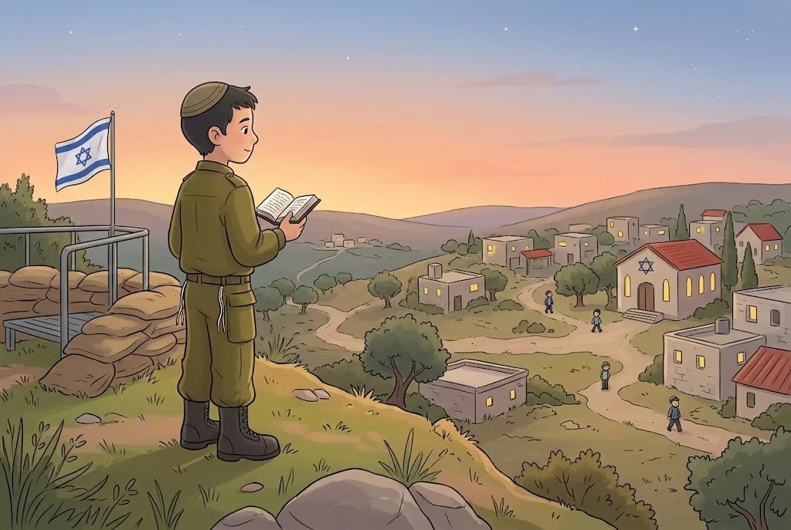

💧לֹא רוֹחֲצִים לְתַעֲנוּג
כָּל רְחִיצָה שֶׁל תַּעֲנוּג אֲסוּרָה – אֲפִלּוּ לְהַכְנִיס אֶצְבַּע קְטַנָּה לְמַיִם. אֲבָל מִי שֶׁהִתְלַכְלֵךְ בְּבֹץ, אוֹ שֶׁיָּרַד לוֹ דָּם מִן הָאַף – מֻתָּר לוֹ לִרְחֹץ אֶת הַמָּקוֹם הַמְלֻכְלָךְ. לֹא שׁוֹטְפִים אֶת הַפֶּה, שֶׁמָּא יִבְלַע טִפַּת מַיִם.
בַּבֹּקֶר נוֹטְלִים יָדַיִם רַק עַד קִשְׁרֵי הָאֶצְבָּעוֹת, שָׁלֹשׁ פְּעָמִים. הַכֹּהֲנִים נוֹטְלִים אֶת כָּל הַיָּד לְבִרְכַּת כֹּהֲנִים, כִּי זוֹ נְטִילָה שֶׁל מִצְוָה.
💛 אַהֲבַת הַשֵּׁם: בַּיּוֹם הַזֶּה ה׳ עַצְמוֹ מְטַהֵר אוֹתָנוּ. ״מִקְוֵה יִשְׂרָאֵל ה׳״ – כְּמוֹ שֶׁהַמִּקְוֶה מְטַהֵר, כָּךְ ה׳ מְטַהֵר אֶת יִשְׂרָאֵל.
🌿סִיכָה, בֹּשֶׂם וּבְשָׂמִים
אָסוּר לִמְרֹחַ שֶׁמֶן אוֹ קְרֵם עַל הַגּוּף. גַּם בֹּשֶׂם אוֹ דֵּאוֹדוֹרַנְט לְרֵיחַ טוֹב – אָסוּר. אֲבָל כְּדֵי לְהָסִיר רֵיחַ רַע – מֻתָּר, וְגַם תַּרְסִיס נֶגֶד יַתּוּשִׁים – מֻתָּר, כִּי זֶה לֹא לְתַעֲנוּג.
לְהָרִיחַ בְּשָׂמִים – מֻתָּר וּמְבָרְכִים עֲלֵיהֶם, כִּי יוֹם הַכִּפּוּרִים הוּא יוֹם טוֹב, וְכָל מָה שֶׁמְּכַבֵּד אֶת הַיּוֹם וְאֵינוֹ אָסוּר – מִצְוָה לַעֲשׂוֹתוֹ. שֶׁלֹּא כְּמוֹ בְּתִשְׁעָה בְּאָב.
💛 אַהֲבַת הַשֵּׁם: יוֹם הַכִּפּוּרִים הוּא לֹא יוֹם עָצוּב – הוּא יוֹם טוֹב שֶׁל טָהֳרָה. אֲפִלּוּ רֵיחַ טוֹב מַזְכִּיר לָנוּ אֶת שִׂמְחַת הַיּוֹם.
👟נְעִילַת הַסַּנְדָּל
אָסוּר לִנְעֹל סַנְדָּל אוֹ נַעַל בְּיוֹם הַכִּפּוּרִים. פַּעַם עָשׂוּ נַעֲלַיִם טוֹבוֹת רַק מֵעוֹר. לְדַעַת רֹב הַפּוֹסְקִים הָאִסּוּר הוּא רַק עַל נַעַל שֶׁל עוֹר, וּמֻתָּר לִנְעֹל נַעֲלַיִם מִבַּד, מִגּוּמִי אוֹ מִפְּלַסְטִיק. הָרַב מֶלָמֵד מַחְמִיר: הַיּוֹם עוֹשִׂים נַעֲלַיִם נוֹחוֹת מִכָּל חֹמֶר, וְלָכֵן לְדַעְתּוֹ אָסוּר לִנְעֹל כָּל נַעַל שֶׁהוֹלְכִים בָּהּ בַּחוּץ, וּמֻתָּרוֹת רַק נַעֲלֵי בַּיִת מִבַּד אוֹ נַעֲלֵי גּוּמִי פְּשׁוּטוֹת מְאוֹד.
נַעֲלֵי בַּיִת מִבַּד מֻתָּרוֹת לְכָל הַדֵּעוֹת. הָרַב מֶלָמֵד עַצְמוֹ כּוֹתֵב שֶׁאֵין לִמְחוֹת בְּיַד הַמְּקִלִּים, וְכָל אֶחָד נוֹהֵג כְּרַבּוֹתָיו. וִילָדִים – מִגִּיל חָמֵשׁ אוֹ שֵׁשׁ מְחַנְּכִים אוֹתָם לֹא לִנְעֹל סַנְדָּל.
💛 אַהֲבַת הַשֵּׁם: כְּשֶׁהָרֶגֶל מַרְגִּישָׁה אֶת הָאֲדָמָה, אֲנַחְנוּ זוֹכְרִים שֶׁאֲנַחְנוּ עוֹמְדִים בַּעֲנָוָה לִפְנֵי ה׳.
🥾מָתַי מֻתָּר לִנְעֹל נַעֲלַיִם
אִסּוּר נְעִילַת הַסַּנְדָּל הוּא כְּשֶׁנּוֹעֲלִים לְנוֹחוּת. לָכֵן מֻתָּר לִנְעֹל נַעֲלַיִם לְמִי שֶׁהוֹלֵךְ בְּמָקוֹם שֶׁיֵּשׁ בּוֹ עַקְרַבִּים, בְּבֹץ וּבְטִיט, אוֹ חַיָּל בְּשֵׁרוּת מִבְצָעִי בְּנַעֲלֵי צָבָא.
גַּם חוֹלֶה שֶׁעָלוּל לְהִצְטַנֵּן בְּלִי נַעֲלַיִם – נוֹעֵל. וְקָטָן שֶׁעָלוּל לְהִנָּזֵק בְּלִי נַעֲלַיִם – מֻתָּר לְהַנְעִיל לוֹ.
💛 אַהֲבַת הַשֵּׁם: גַּם הָעִנּוּי נִתָּן בְּחָכְמָה וּבְרַחֲמִים. ה׳ לֹא רוֹצֶה שֶׁנִּפָּגַע – הוּא רוֹצֶה שֶׁנִּתְעַלֶּה.
🧒יְלָדִים וִילָדוֹת וְהַצּוֹם
בָּנִים וּבָנוֹת מִתַּחַת לְגִיל תֵּשַׁע אֵינָם מִתְחַנְּכִים לְצוֹם, כִּי הַצּוֹם עָלוּל לְהַזִּיק לָהֶם. מִגִּיל תֵּשַׁע מְחַנְּכִים בָּנִים וּבָנוֹת בְּרִיאִים לָצוּם כַּמָּה שָׁעוֹת – מִי שֶׁרָגִיל לֶאֱכֹל בִּשְׁמוֹנֶה בַּבֹּקֶר, יֹאכַל לִקְרַאת הַצָּהֳרַיִם. חַלָּשִׁים – מִגִּיל עֶשֶׂר. מִגִּיל אַחַת עֶשְׂרֵה מְחַנְּכִים לָצוּם יוֹם שָׁלֵם, וְחַלָּשִׁים – עַד הַצָּהֳרַיִם.
בְּגִיל שְׁתֵּים עֶשְׂרֵה הַבָּנוֹת חַיָּבוֹת לָצוּם מִן הַתּוֹרָה – הֵן כְּבָר בְּנוֹת מִצְוָה. הַבָּנִים בְּגִיל שְׁתֵּים עֶשְׂרֵה צָמִים מִדִּבְרֵי חֲכָמִים, לְחִנּוּךְ, וּמִגִּיל שְׁלֹשׁ עֶשְׂרֵה – מִן הַתּוֹרָה. בֵּן חוֹלֶה בְּגִיל שְׁתֵּים עֶשְׂרֵה אֵינוֹ חַיָּב, וּמִשְׁתַּדֵּל לָצוּם עַד הַצָּהֳרַיִם.
💛 אַהֲבַת הַשֵּׁם: כָּל שָׁנָה עוֹד קְצָת – צַעַד אַחַר צַעַד. ה׳ שָׂמֵחַ בְּכָל שָׁעָה שֶׁיֶּלֶד אוֹ יַלְדָּה צָמִים בִּשְׁבִילוֹ.
🧠 בְּדֹק אֶת עַצְמְךָ
חַיָּל בְּשֵׁרוּת מִבְצָעִי בְּיוֹם הַכִּפּוּרִים. הַאִם מֻתָּר לוֹ לִנְעֹל נַעֲלֵי צָבָא?
💡 הָאִסּוּר הוּא לִנְעֹל נַעֲלַיִם לַהֲלִיכָה נוֹחָה. מִי שֶׁצָּרִיךְ אוֹתָן מִסִּבָּה אַחֶרֶת – חַיָּל בְּשֵׁרוּת מִבְצָעִי, הוֹלֵךְ בְּבֹץ אוֹ בְּמָקוֹם שֶׁל עַקְרַבִּים – רַשַּׁאי לִנְעֹל.
בְּיוֹם הַכִּפּוּרִים הִרְגִּישׁ דָּוִד רֵיחַ זֵעָה רַע. מָה מֻתָּר לוֹ?
💡 בֹּשֶׂם אוֹ דֵּאוֹדוֹרַנְט לְרֵיחַ טוֹב – אָסוּר. אֲבָל כְּדֵי לְהָסִיר רֵיחַ רַע – מֻתָּר, כְּמוֹ שֶׁמֻּתָּר לִרְחֹץ מָקוֹם מְלֻכְלָךְ. מִקְלַחַת שֶׁל כָּל הַגּוּף – אֲסוּרָה.
אֵלִיָּהוּ בֶּן שְׁתֵּים עֶשְׂרֵה חוֹלֶה בְּיוֹם הַכִּפּוּרִים, בְּלִי סַכָּנָה. הַאִם עָלָיו לָצוּם?
💡 בֶּן שְׁתֵּים עֶשְׂרֵה צָם מִדִּבְרֵי חֲכָמִים, לְחִנּוּךְ. אִם הוּא חוֹלֶה – גַּם בְּלִי סַכָּנָה – הוּא עוֹד לֹא בַּר מִצְוָה וְאֵינוֹ חַיָּב, וְיִשְׁתַּדֵּל לָצוּם עַד הַצָּהֳרַיִם. מִגִּיל שְׁלֹשׁ עֶשְׂרֵה – חוֹבָה מִן הַתּוֹרָה.
📚 עוֹד חָמְרֵי לִמּוּד עַל הֲלָכָה – חִנָּם, בַּמַּאֲגָר הַקּוֹל הַחֲמִישִׁי:
kol-toda.co.il/halacha
הַמַּאֲגָר הַמָּלֵא: kol-toda.co.il
הַמַּאֲגָר הַמָּלֵא: kol-toda.co.il